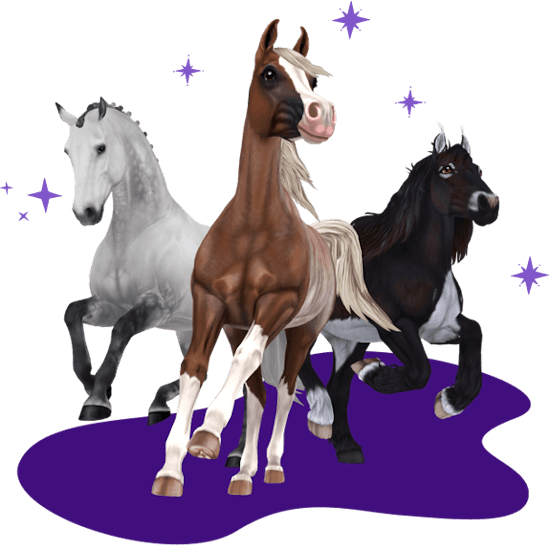

-
Een paardenspel boordevol avonturen!
- Spelen

Wat is Star Stable Online?
Een online paardenspel vol magie en avontuur
Welkom bij het paardenspel Star Stable Online. Hier kun je een ruiterdroom beleven, het prachtige eiland Jorvik verkennen, magische quests doen en tijd doorbrengen met vrienden
DE HOOFDPUNTEN
-
DE PAARDEN
Maak je ros klaar voor je avonturen te paard, waaronder missies, wedstrijden, kampioenschappen en ruiterevenementen. Bouw een band op met ruim 80 echte paardenrassen, unieke magische paarden en verzorg ze in je eigen stal.
 -
OPEN WERELD
Laat je betoveren door het magische Jorvik. Speel nieuwe gebieden vrij met unieke en fraaie landschappen en nieuwe activiteiten terwijl je steeds verder komt in het spel. Ontwikkel je personage en paarden via zijmissies, verhaalmissies en ruiteractiviteiten.
-
VERHAALMISSIE
Sluit je aan bij de Soul Riders van Jorvik en hun indrukwekkende Soul Horses en strijd tegen de snode plannen die de magie van de druïden en daarmee het unieke karakter van het eiland bedreigen.
-
JE EIGEN STIJL
Rust je paarden uit met sprookjesachtige accessoires en geef je personage een eigen stijl met de talloze opties voor make-up, kleding, kapsels en accessoires.
-
SPEEL SAMEN
Jorvik heeft een levendige, hechte gemeenschap van paardenliefhebbers en avonturiers. Speel met vrienden, word lid van een ruiterclub of begin er zelf eentje. In Star Stable sta je er nooit alleen voor, tenzij je dat graag wil‚Ķ üòè
-
EVENEMENTEN
Geniet van de seizoensfestivals en onvergetelijke evenementen die het eiland Jorvik en zijn gemeenschap tot leven brengen. Sluit je aan bij de grote vieringen zoals Halloween, het Winterevenement en het Ruiterfestival.
Probeer het spel tot level 5!
Als je het proefgebied leuk vindt en nog meer content wilt spelen, kun je overwegen om een Star Rider-lidmaatschap te nemen. Met Star Rider ontgrendel je meer delen van de wereldkaart, missies en evenementen.
Meer informatie over Star RiderMEERDERE PLATFORMS
Dankzij de naadloze synchronisatie tussen pc en mobiel heb je overal en altijd je paarden bij je. Speel Star Stable met je vrienden op je Mac, IOS of Android -apparaat. De keus is helemaal aan jou.